This guide demonstrates how to integrate WatchGuard Cloud with Mambo Wi-Fi to enable guest users to authenticate to a captive portal.
Before you begin, make sure your access point is activated with a WatchGuard Standard Wi-Fi or USP Wi-Fi Management license and registered with WatchGuard Cloud. For more information, go to Activate an Access Point.
The Mambo Wi-Fi web site is in Portuguese only. If necessary, use translation tools to help you understand the website menus. Translated items might not appear the same because of differences in the translation software.
Contents
Platform and Software
The hardware and software used in this guide include:
- Mambo:
- Mambo Wi-Fi Admin Panel Account
- WatchGuard:
- WatchGuard AP230W with firmware version 2.5.7 or higher
- WatchGuard Cloud Account
- Wireless client devices
Additional charges might apply to use Mambo Wi-Fi.
Test Topology
For more information about network port configuration for communications between your access points, WatchGuard Cloud, and Mambo, go to the Mambo support documentation and the WatchGuard Cloud Access Point documentation.
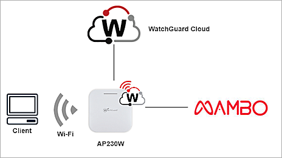
Mambo Wi-Fi Configuration
Get the WatchGuard Access Point Device Settings
Make sure that you record the MAC address of each WatchGuard access point you want to integrate with the Mambo Wi-Fi.
To get the settings for each WatchGuard access point:
- Log in to your WatchGuard Cloud account.
If you are a service provider, make sure you have allocated the activated access point to a subscriber account in WatchGuard Cloud. - Select Configure > Devices.
- Select the Access Point tab.
- Select an access point.
- Click Device Settings.
- Copy the device MAC address. This value is required when you configure Mambo Wi-Fi.
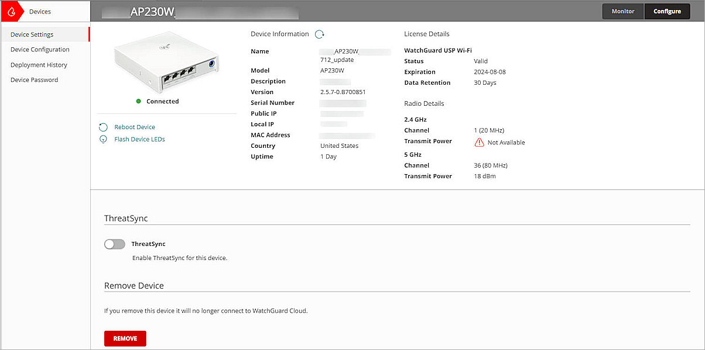
(Optional) Create a Custom Template in Mambo Wi-Fi
This section is describes how to create a custom template in Mambo Wi-Fi. Skip this section if you want to use the default standard template.
- Log in to the Mambo Wi-Fi Admin Panel.
- From the left navigation bar, select Templates.
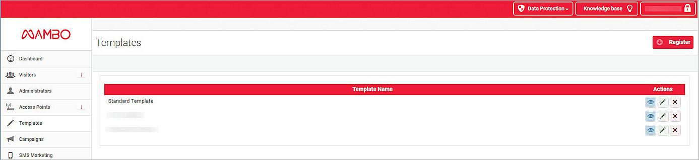
- Click Register in the top-right of the page.
The Templates page opens. - In the Template Name text box, type a template name.
- (Optional) From the Logo and Background section, upload images to customize your template.
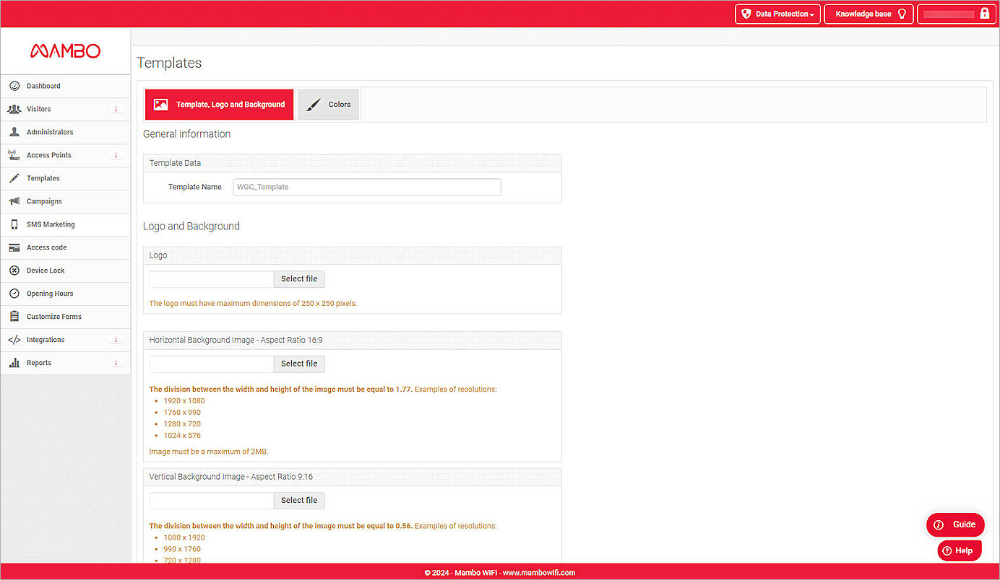
- Click To save.
(Optional) Create an Access Point Group in Mambo Wi-Fi
This section describes how to create a group to organize your business rules and apply the rules to one or more access points. Skip this section if you want to use the default group in Mambo Wi-Fi.
- Log in to the Mambo Wi-Fi Admin Panel.
- From the left navigation bar, select Access Points (or Points of Access depending on your translation software) > Groups.
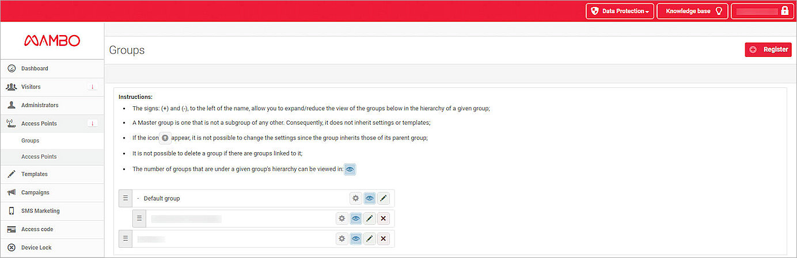
- Click Register in the top-right of the page.
The Groups page opens. - In the Rule name text box, type a rule name.
- In the Template text box, select the template that you created.
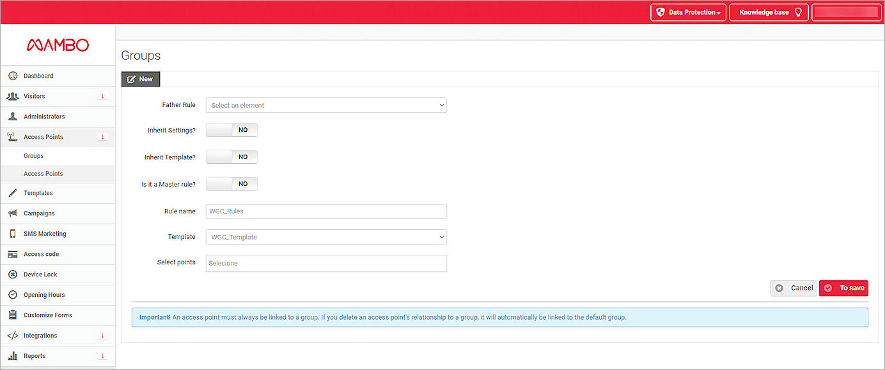
- Click To save.
The Group Settings: <Group Name> page opens. - For Login and Registration, select one or more Authentication/ Registration Options.
These options appear before the Captive Portal authentication. In this example, select Login Form, Registration Form, and 1-click login.
- (Optional) Select the Facebook, Twitter, Google, or LinkedIn social authentication methods.
If you select any of the social login methods, make sure you add the corresponding domains to the walled garden settings in WatchGuard Cloud. For more information, go to the Walled Garden for login via social networks Mambo support document.
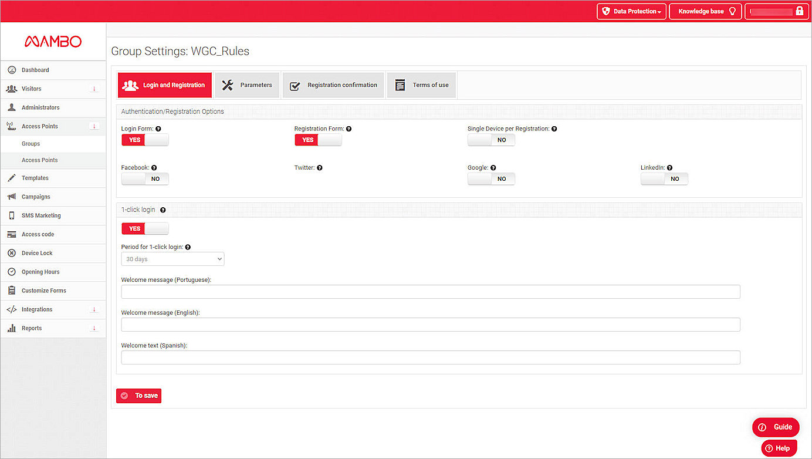
- Select the Parameters tab.
- In the Sender of emails sent to visitors text box, type a valid email address.
You will receive an email from AWS. Click the link to confirm that the email is valid. - Leave the other settings at the default values.
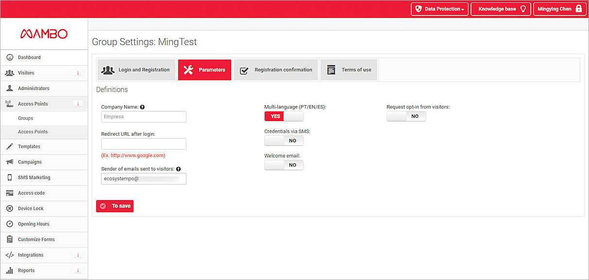
- Click To save.
Create an Access Point
- Log in to the Mambo Wi-Fi Admin Panel.
- From the left navigation bar, select Access Points (or Points of Access depending on your translation software) > Access Points.
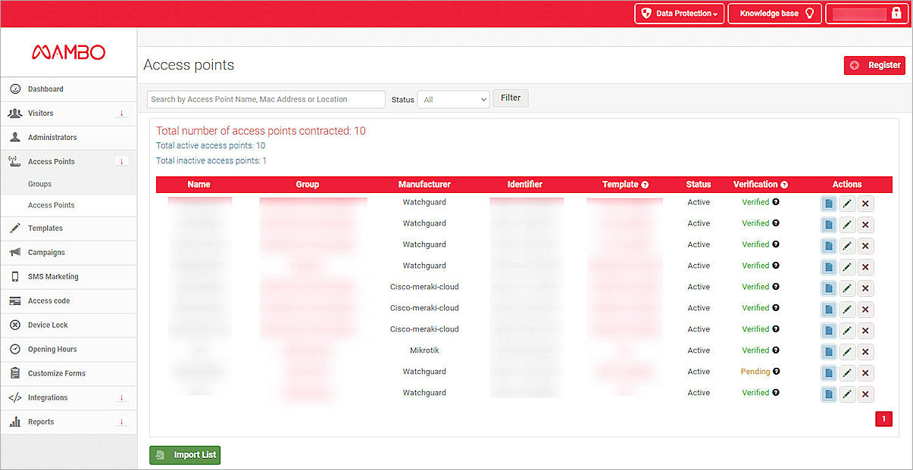
- Click Register in the top-right of the page.
The Access Point page opens. - From the Status drop-down list, select Active.
- In the Name text box, type a name.
- From the Manufacturer drop-down list, select WatchGuard.
- In the Equipment Mac Address text box, paste the MAC address of your access point you recorded in the previous section.
- From the Group drop-down list, select the group you created in the previous section.
- From the Template drop-down list, select the template you created in the previous section.
- From the Time-zone drop-down list, select a time zone.
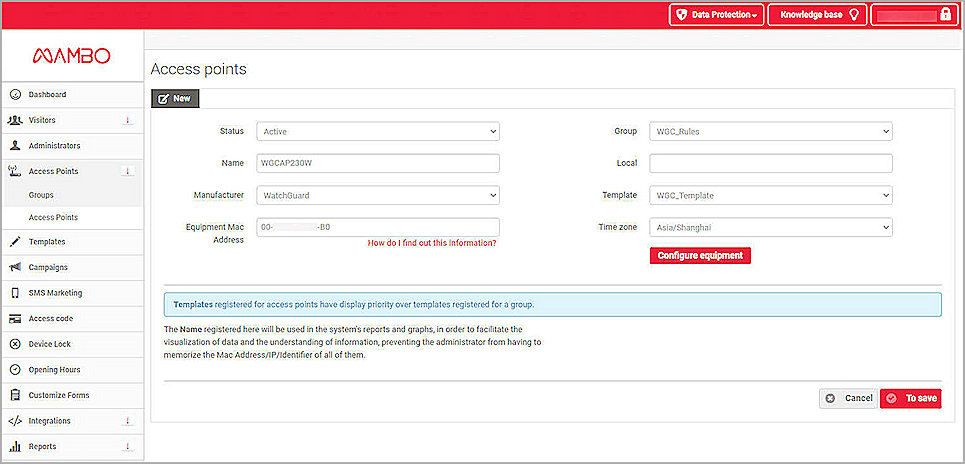
- Click Configure equipment.
A pop-up window with configuration details for the integration appears.
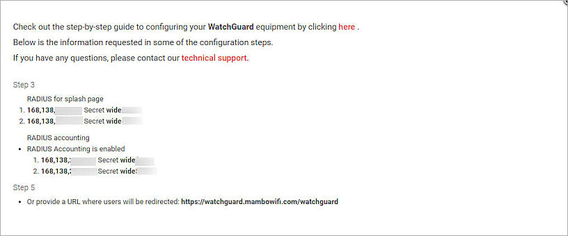
- In the Step 3 section, copy and save the RADIUS for splash page and RADIUS accounting IP addresses and shared keys. You need this information when you configure Wi-Fi in WatchGuard Cloud.
- In the Step 5 section, copy and save the splash page URL: https://watchguard.mambowifi.com/watchguard. You need this information when you configure Wi-Fi in WatchGuard Cloud.
- Click to close the pop-up window.
- Click To save.
Create a Campaign in Mambo Wi-Fi
When you set up a campaign in Mambo Wi-Fi, we recommend that you use the Firefox browser. If you use other browsers, the start or end time settings might not be available because of browser compatibility issues.
- From the left navigation bar, select Campaigns.
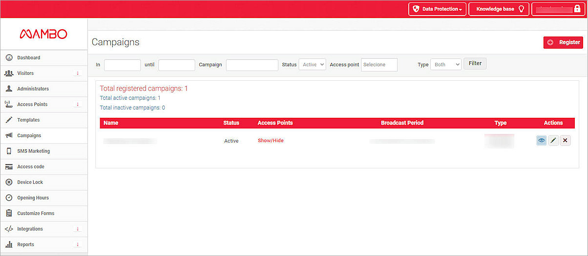
- Click Register in the top-right of the page.
The Campaigns page opens. - In the General information field, in the Campaign Title text box, type a campaign name.
- In the URL of Redirecting or Redirect URL (depending on your translation software) text box, type a URL for the landing page.
In this example, use https://www.watchguard.com/
- In the Campaign Period and Display Hours field, configure the Start and End dates.
- Leave the other settings at the default values.
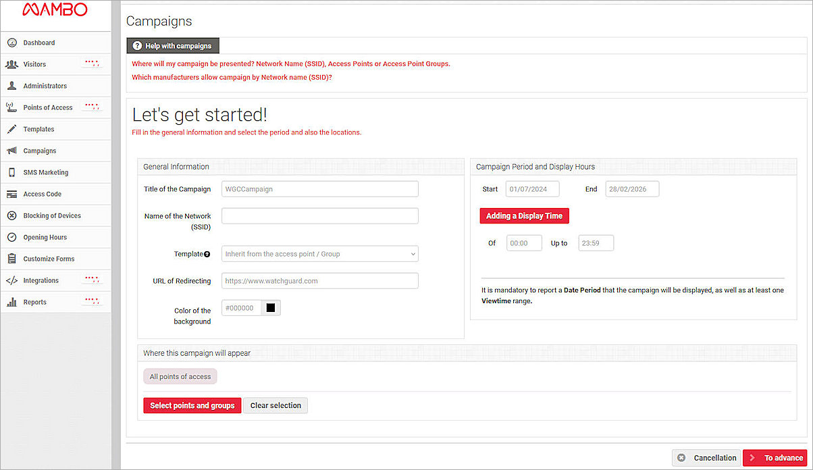
- Click To advance to go to the Pre Login page.
- On the Pre Login page, select which type of media you want to insert before you authenticate to the Internet. In this example, we select Skip to this step.
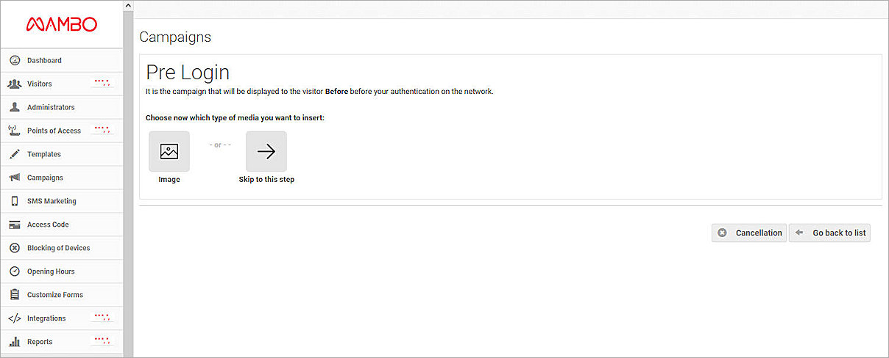
- On the Post Login page, select which type of media you want to insert after you authenticate to the Internet. In this example, we select Skip to this step.
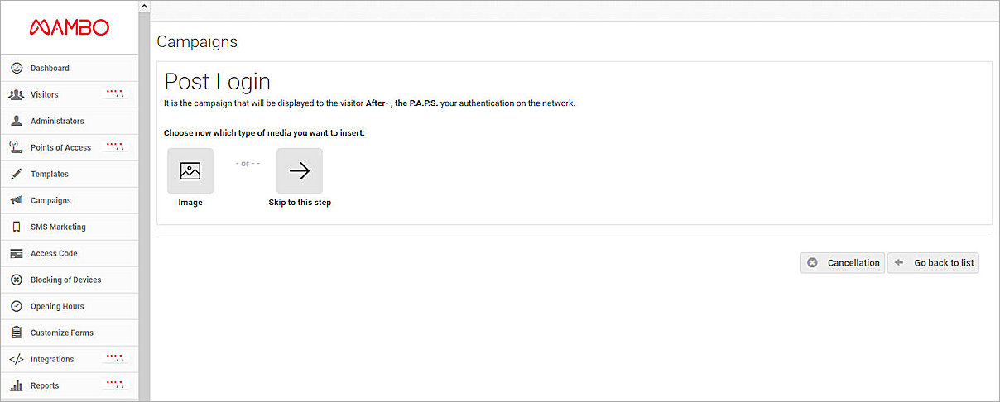
- On the campaign preview page, click the Confirm and Active button.
Your campaign is registered and active.
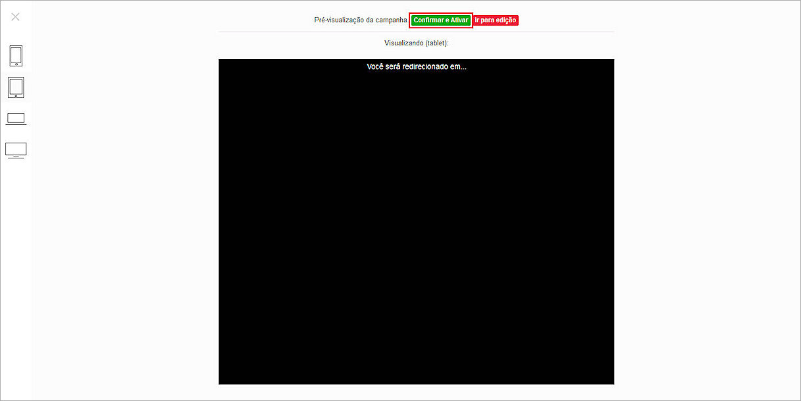
WatchGuard Cloud Configuration
Access points can have two different types of settings:
- Device-level settings — Settings that you apply individually to each access point.
- Access Point Site settings — Access Point Sites enable you to create SSID settings and apply them to multiple access points that subscribe to the site.
The Captive Portal feature is only available when setting up Access Point Site settings. For detailed information on Wi-Fi in WatchGuard Cloud deployment and configuration, go to Get Started with Wi-Fi in WatchGuardud Cloud.
Add a RADIUS Authentication Domain to WatchGuard Cloud
To configure a RADIUS authentication domain in WatchGuard Cloud:
- Log in to your WatchGuard Cloud account.
If you are a service provider, make sure you have allocated the activated access point to a subscriber account in WatchGuard Cloud. - Select Configure > Directories and Domain Services.
- Click Add Authentication Domain.
- Select RADIUS.
- In the Domain Name text box, type a domain name. In this example, we use primary.mambo.
- From the RADIUS Server Type drop-down list, select RADIUS Authentication Server.
- From the Type drop-down list, select Host IPv4.
- In the IP Address text box, type the primary IP address of the Mambo Wi-Fi RADIUS server.
- In the Port text box, type the authentication port number of the Mambo Wi-Fi RADIUS server.
- In the Shared secret text box, type the shared secret of the Mambo Wi-Fi RADIUS server.
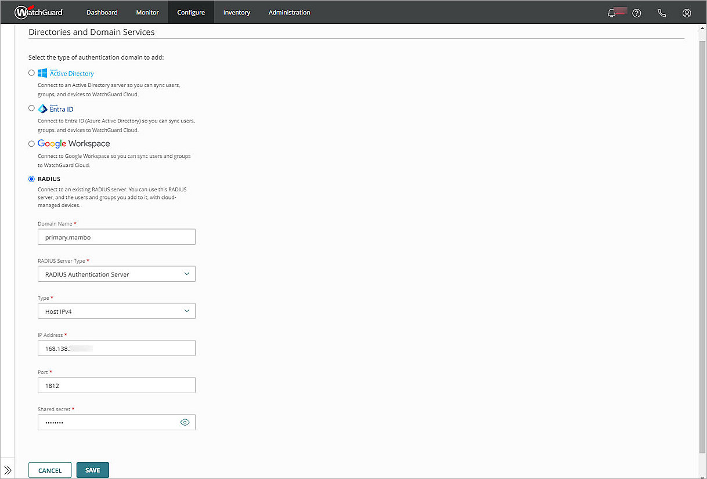
- Click Save.
- From the authentication domain list, select your domain name. In this example, primary.mambo.
- From the Update Directories and Domain Service page, select Servers.
- Click Add Server.
- Repeat steps 4 to 11 to create a RADIUS Accounting Server with port 1813.
The authentication and accounting services are on the same RADIUS server and run on different ports. - (Optional) Repeat these steps to create a secondary RADIUS server.
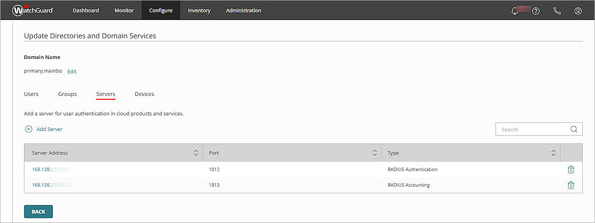
Configure SSID Settings for an Access Point Site
To configure SSID settings for an Access Point Site in WatchGuard Cloud:
- Log in to your WatchGuard Cloud account.
If you are a service provider, make sure you have allocated the activated access point to a subscriber account in WatchGuard Cloud. - Select Configure > Access Points Sites.
- Select an existing site, or add a new site.
- In the Subscribed Devices tab, make sure your access points are subscribed to the site.
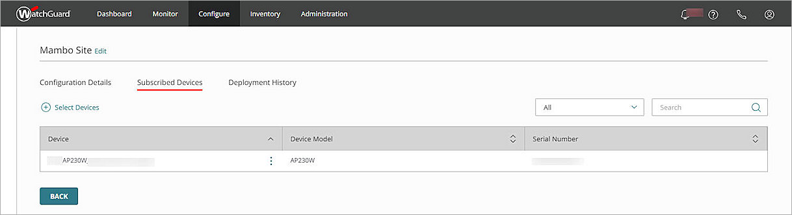
- From the Configuration Details tab, in the Wi-Fi Networks section, click SSIDs.
- Click Add SSID.
- In the SSID Name text box, type an SSID name. In this example, we use Mambo-Guest.
- Check Broadcast SSID.
- From the SSID Type drop-down list, select Guest.
- From the Radio drop-down list, select 2.4 GHz and 5 GHz.
- From the Security drop-down list, select Open.
- In the Network section, select Bridged.
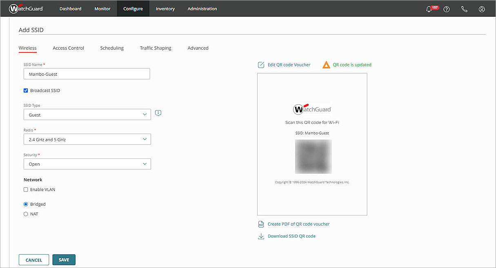
- Click Save.
- To apply the configuration to your access points, click Schedule Deployment in the banner at the bottom of the page.
- Type a Description for the deployment.
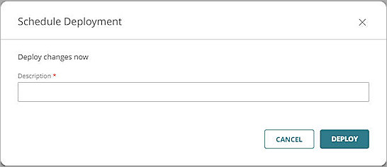
- Click Deploy, then click Close.
Configure an Authentication Domain for an Access Point Site
To configure Authentication Domain settings for an Access Point Site:
- Log in to your WatchGuard Cloud account.
If you are a service provider, make sure you have allocated the activated access point to a subscriber account in WatchGuard Cloud. - Select Configure > Access Point Sites.
- Select the Access Point Site where you configured your SSID in the SSID settings section.
- Select the Configuration Details tab.
- In the Authentication widget, click Domains.
- Click Add Authentication Domain.
- From the Select an existing Authentication Domain drop-down list, select the domain you created in the Add RADIUS Authentication Domain to WatchGuard Cloud section.
- From the RADIUS Authentication Server drop-down list, select the primary or secondary RADIUS authentication server.
- From the RADIUS Accounting Server drop-down list, select the primary or secondary RADIUS accounting server.
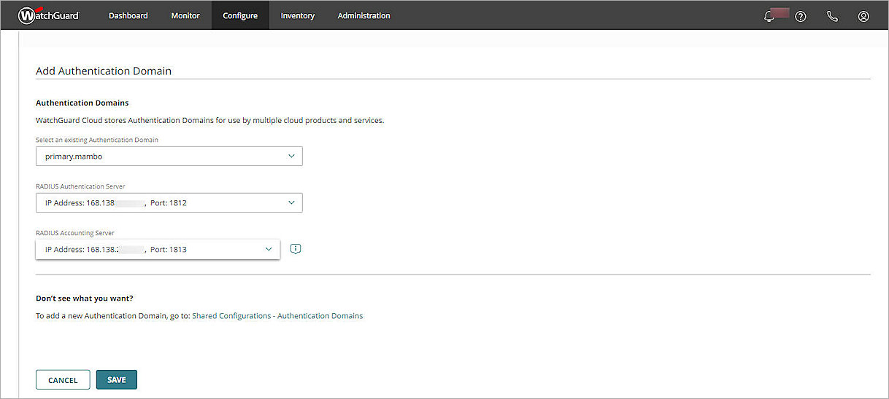
- Click Save.
- To apply the configuration to your access points, click Schedule Deployment in the banner at the bottom of the page.
- Type a Description for the deployment.
- Click Deploy, then click Close.
Configure a Captive Portal for a Guest SSID
To add a captive portal to an SSID, you must enable the Captive Portal option in an Access Point Site:
- Log in to your WatchGuard Cloud account.
If you are a service provider, make sure you have allocated the activated access point to a subscriber account in WatchGuard Cloud. - Select Configure > Access Point Sites.
- Select the Access Point Site where you configured your SSID in the SSID settings section.
- Select the Configuration Details tab.
- In the Portal widget, click Captive Portal.
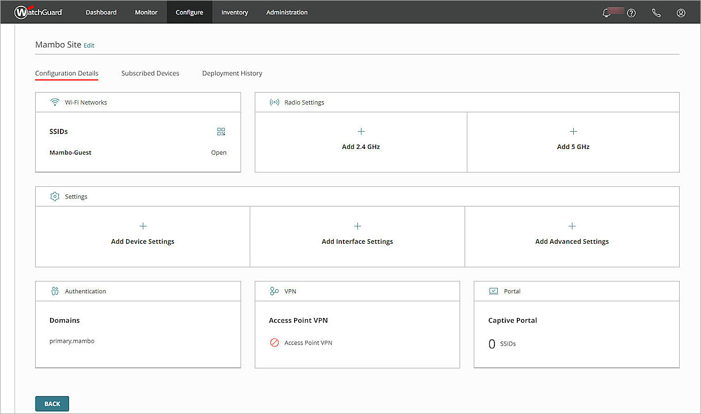
- Click Add Captive Portal.
The Add Captive Portal page opens. - From the SSID drop-down list, select the SSID you created in the Configure SSID Settings for an Access Point Site section.
- From the Captive Portal Type drop-down list, select Third-party hosted.
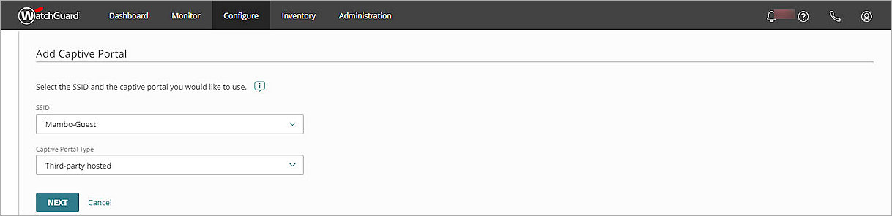
- Click Next.
- In the Splash Page URL text box, type or paste the Mambo Wi-Fi splash page URL.
For example https://watchguard.mambowifi.com/watchguard/ - From the Authentication Domain drop-down list, select the authentication domain you created in the Add RADIUS Authentication Domain to WatchGuard Cloud section.
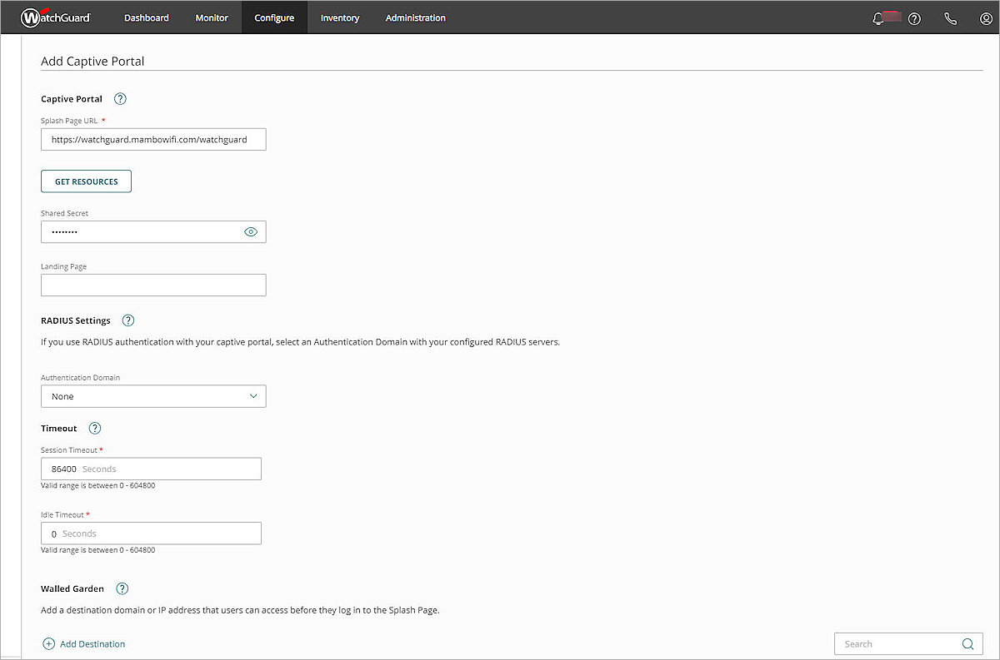
- In the Walled Garden section, click Add Destination to add the basic configuration domains provided by Mambo Wi-Fi.
To support social network logins, make sure you add these domains for each network you plan to support.- Basic Configuration
- mambowifi.com
- uploads.mambowifi.com
- watchguard.mambowifi.com
- Facebook
- facebook.com
- facebook.net
- akamaihd.net
- fbcdn.net
- static.xx.fbcdn.net
- Twitter
- twitter.com
- twimg.com
- abs.twitter.com
- LinkedIn
- www.linkedin.com
- static.licdn.com
- ponf.linkedin.com
- platform.linkedin.com
- dpm.demdex.net
- lnkd.demdex.net
- Google
- www.googleapis.com
- ssl.gstatic.com
- fonts.gstatic.com
- www.gstatic.com
- accounts.google.com
- accounts.youtube.com
- accounts.google.com.br
- Basic Configuration
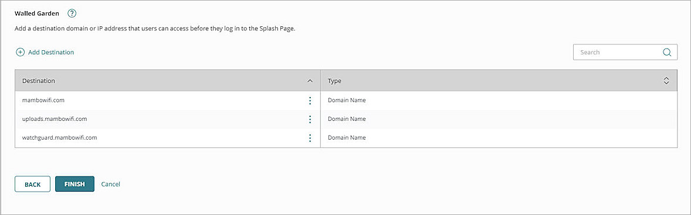
- Leave the other options at their default settings.
- Click Finish.
- Return to the Configuration Details page of the Access Point Site.
- To apply the configuration to your access points, click Schedule Deployment in the banner at the bottom of the page.
- Type a Description for your deployment.
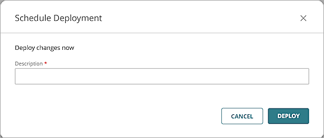
- Click Deploy, then click Close.
Test the Mambo Wi-Fi Integration
To test the Mambo Wi-Fi integration with WatchGuard Cloud:
- Use a wireless client to connect to the SSID you created in WatchGuard Cloud.
The client's web browser is redirected to the Mambo Wi-Fi splash page. - Complete the requested information to connect through the splash page.
The configured Landing page opens. - Access the Internet through the captive portal.
If you try to log in with your registered email account, you can view the detailed information about the device in Mambo Wi-Fi. Go to Reports > Visitors, then click the visitor email address.
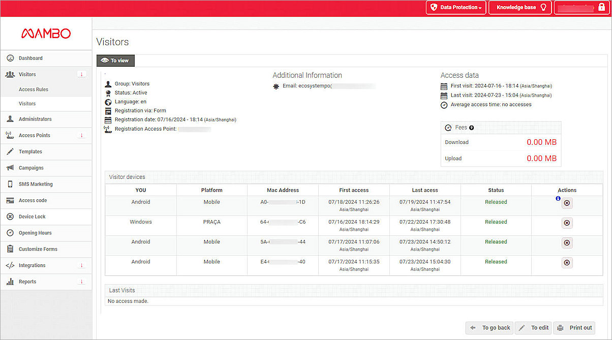